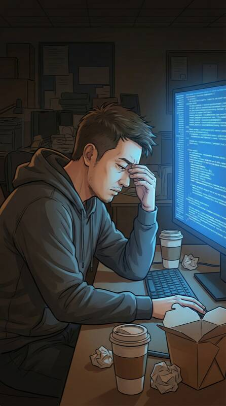
2026年，深夜11:47。
又是一个加班到快吐的夜晚。屏幕上的代码已经看了三个小时，一行都没改。
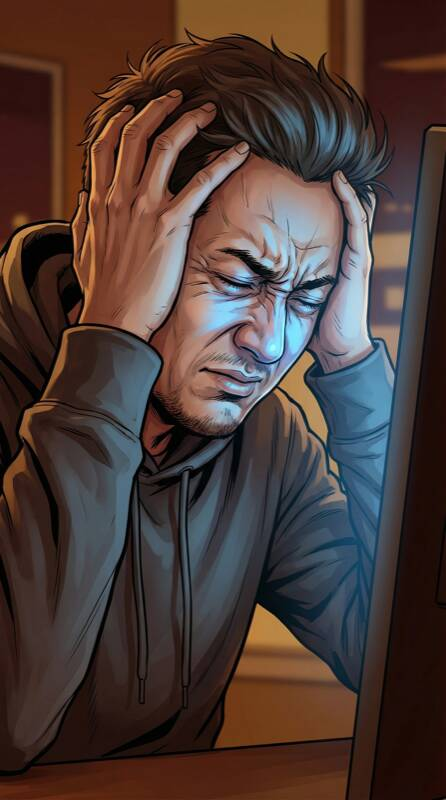
突然，一阵剧烈的头痛袭来——像有人用电钻在我太阳穴上开洞。
我的眼前开始发黑……
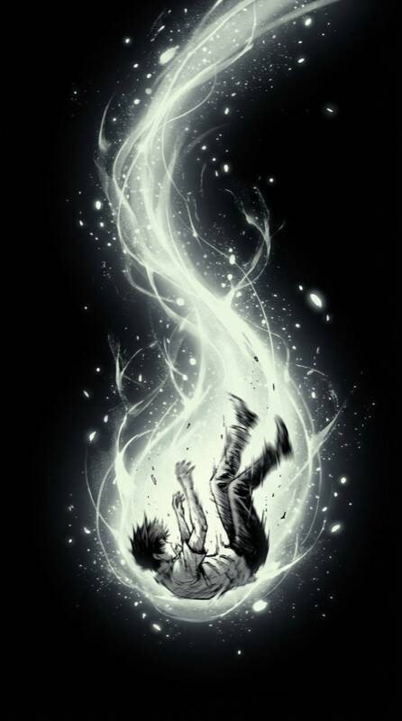
意识坠入了无尽的黑暗。
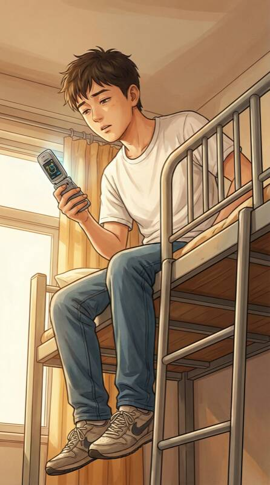
「滴滴滴——滴滴滴——」
一个刺耳的闹钟声把我吵醒。我伸手去摸手机，摸到的不是iPhone，是一个……翻盖的？
等等。我在哪？
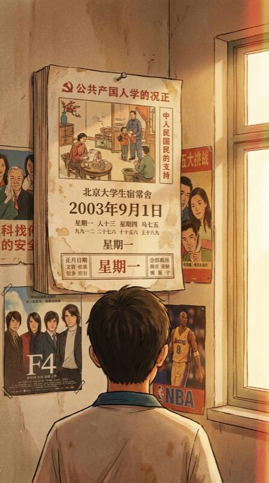
墙上的挂历上写着——
2003年9月1日
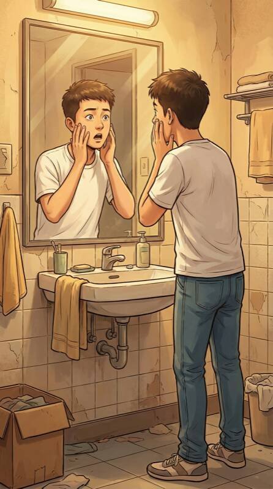
我冲进卫生间，对着镜子——
没有胡子。脸瘦了一圈。皮肤……好得不像话。
这是20岁的我。
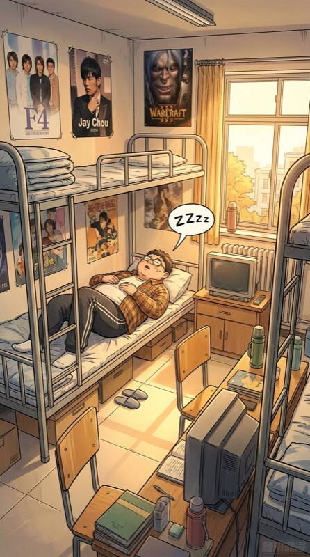
上海交通大学，四人宿舍。上下铺铁架床，17寸CRT显示器，桌上堆着谭浩强的《C程序设计》。
对面下铺，老陈打鼾打得地动山摇。
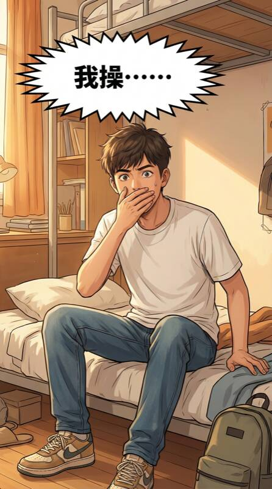
我操……我重生了？？？
脑子里2026年的记忆清清楚楚：每一个风口，每一个巨头的崛起轨迹，每一项关键技术的演进路线。
全都记得。一个字都没丢。
重生后第一件事做什么？
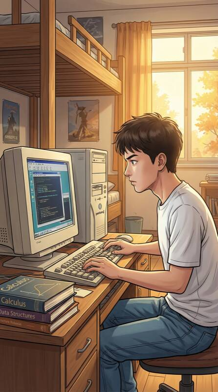
我悄悄爬下床，坐到书桌前。奔腾4的主机发出低沉的嗡嗡声，17寸CRT闪了几下亮起来。
好。先确认一件事——脑子里的东西，还能不能用？
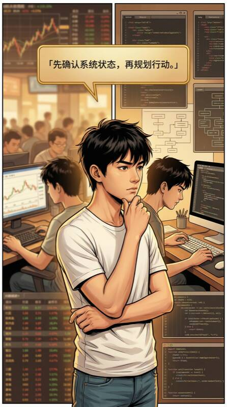
炒股？那是投机。我要做的事，比炒股大一万倍。
先确认系统状态，再规划行动。
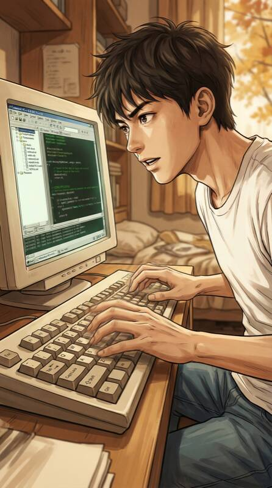
打开VC++ 6.0，手指落在键盘上——
然后我就停不下来了。
2003年的IDE、2003年的编译器，但脑子里的架构思维是2026级别的。数据结构、算法、系统设计……全在。
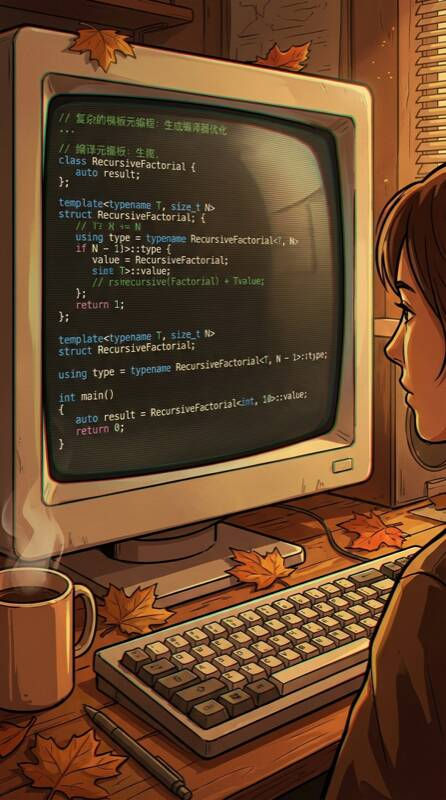
一个小时。室友们要写一周的数据结构作业，我一个小时写完了。
不止写完了——我用了2026年的设计模式重构了它。这代码放到2003年，简直是外星科技。
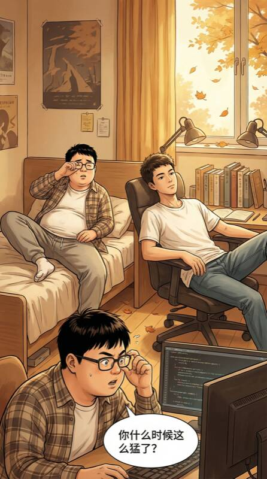
老陈：「嗯？你小子……什么时候起的？」
他揉着眼睛凑过来，推了推黑框眼镜看了一眼屏幕——
老陈：「卧槽？！你什么时候这么猛了？这代码……你写的？」
我耸耸肩：「昨晚突然开窍了。」
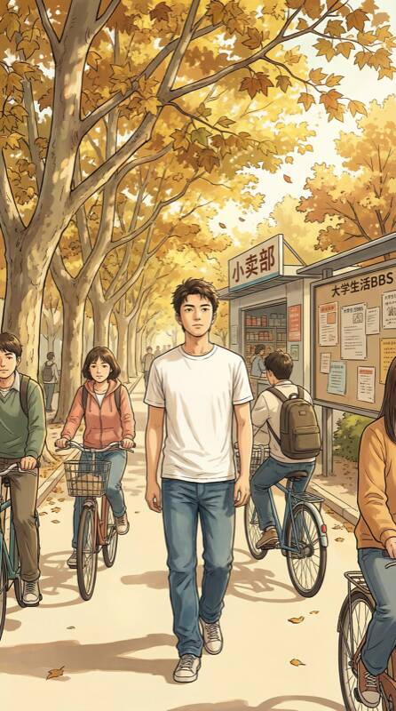
九月的交大校园，梧桐叶开始泛黄。
我走在林荫道上，身边是骑自行车的同学、扛着暖水瓶的女生、还有BBS公告栏前看新生通知的人群。
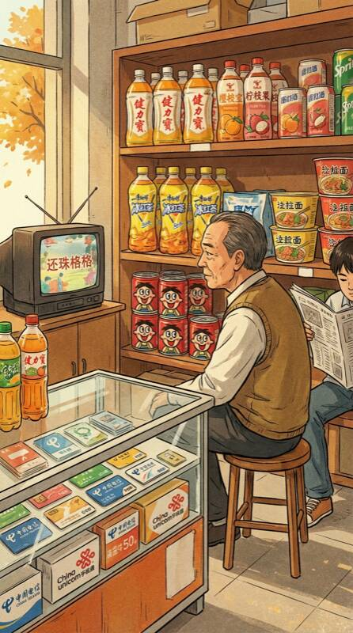
路过小卖部。货架上是健力宝、冰红茶、旺仔牛奶。手机充值卡还要到柜台买。
2003年。QQ刚过亿用户，淘宝刚刚成立，百度刚上市不久。
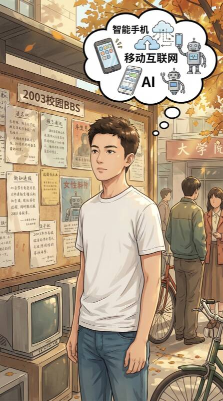
我站在BBS公告栏前，看着上面贴的"新学期选课通知"和"二手自行车转让"。
这些人不知道。三年后iPhone会改变一切。五年后移动互联网会创造千亿市值。十年后AI会开始改变世界。
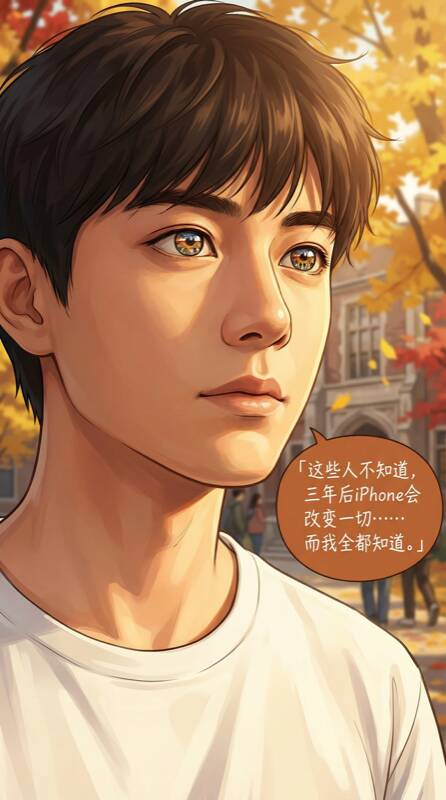
而我全都知道。
这种孤独感，比加班到凌晨还要让人窒息。
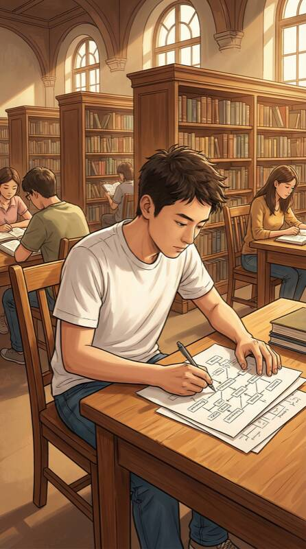
下午。交大图书馆。
我找了个角落坐下，掏出草稿纸，开始画未来二十年的科技树。
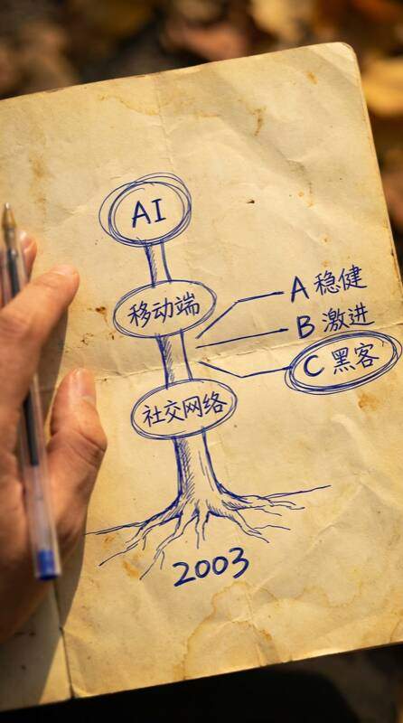
2003→社交网络→移动互联网→O2O→共享经济→AI→大模型……
每个节点我都标了时间线。每个风口我都记得谁赢了、谁死了、为什么死的。
面前有三条路。
战略选择——走哪条路？
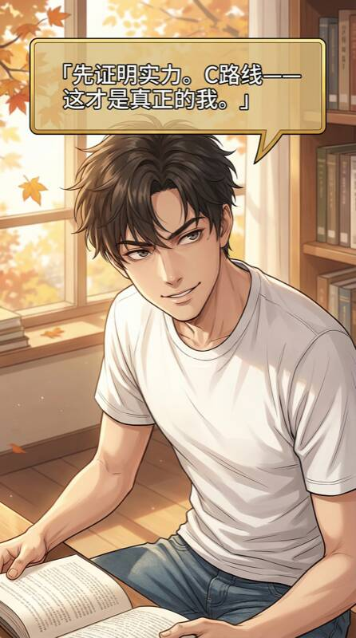
C路线。这才是真正的我。
不靠预知炒股，不靠抄袭未来——靠实力打出一片天。然后在正确的时间做正确的事。
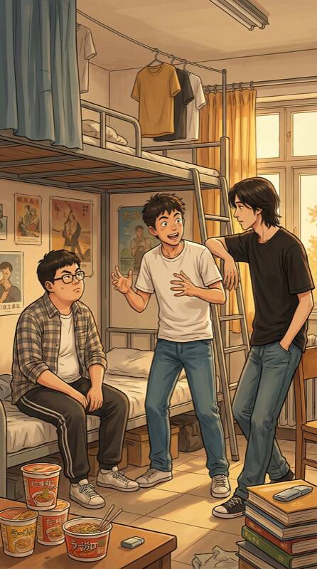
晚上。宿舍。
我把老陈和赵磊叫到一起。
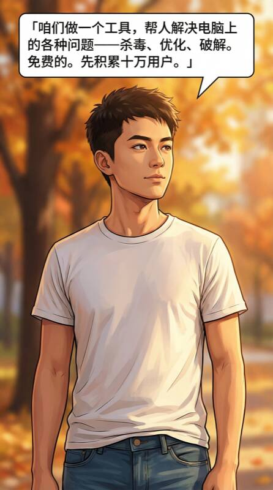
我：「我有个想法。咱们做一个工具，帮人解决电脑上的各种问题——杀毒、优化、破解。免费的。先积累十万用户。」
老陈：「你疯了吧？免费怎么赚钱？咱还得交学费呢。」
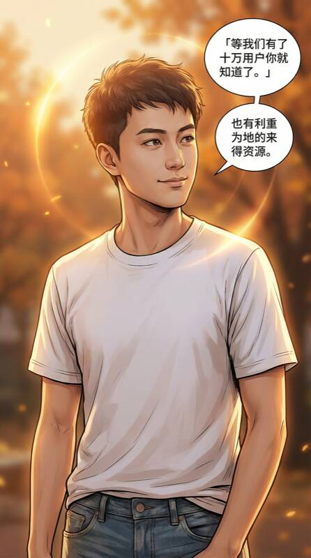
我笑了。
我：「等我们有了十万用户，你就知道了。」
2003年，全中国还没几个人懂"流量变现"这个词。
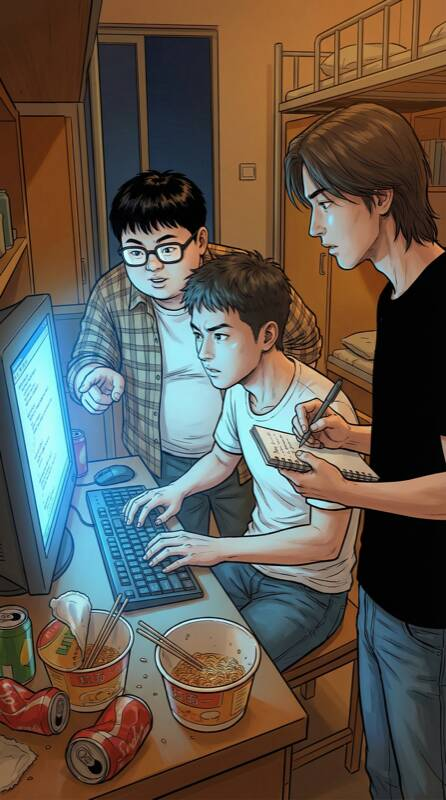
当晚。宿舍熄灯后。
三个人挤在一台CRT前面。我写核心代码，老陈帮忙debug，赵磊负责写宣传文案。
泡面的香味弥漫在空气中。窗外是上海的夜空。
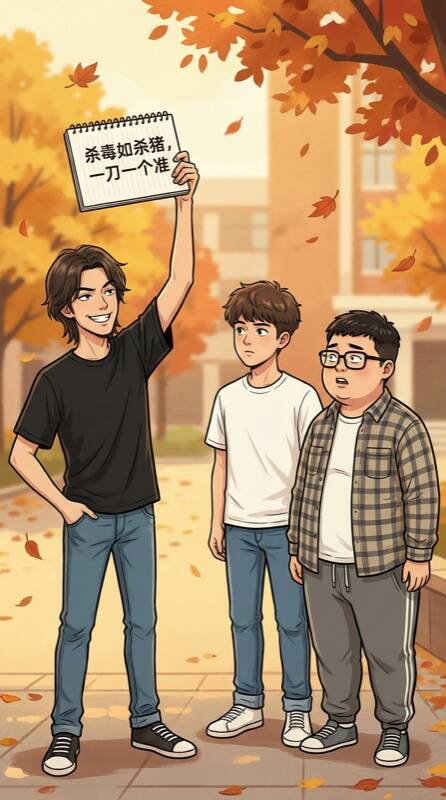
赵磊：「来来来，我想了个口号——'杀毒如杀猪，一刀一个准'！怎么样？」
我和老陈对视一眼。
老陈：「……你确定你是学中文的？」
赵磊：「怎么了！很有力量感啊！」
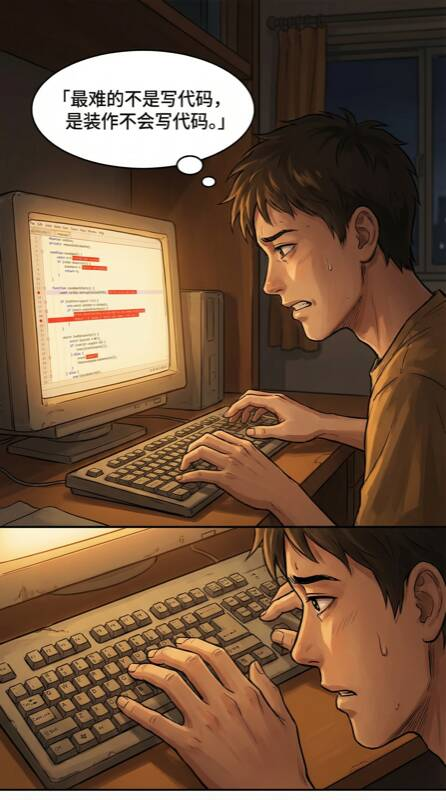
最难的部分来了——我得装作不会写代码。
故意在一个循环里多写一个分号。然后等着老陈发现。
最难的不是写代码。是装作不会写代码。
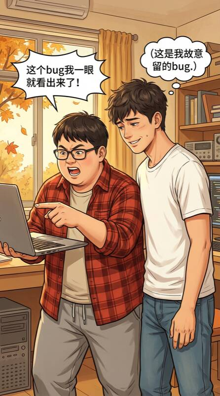
老陈：「哎！你这有个多余的分号！我一眼就看出来了！」
他推了推眼镜，一脸得意。
对不起老陈。这个bug是我故意留的。以后你会知道我为什么要这么做。
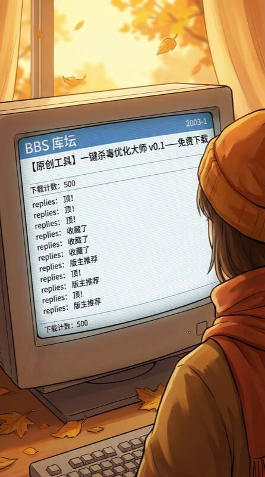
三天后。工具第一版上传到交大BBS。
帖子标题：「【原创工具】一键杀毒优化大师 v0.1——免费下载」
一夜之间，500次下载。回帖全是"顶"和"收藏了"。
开始了。
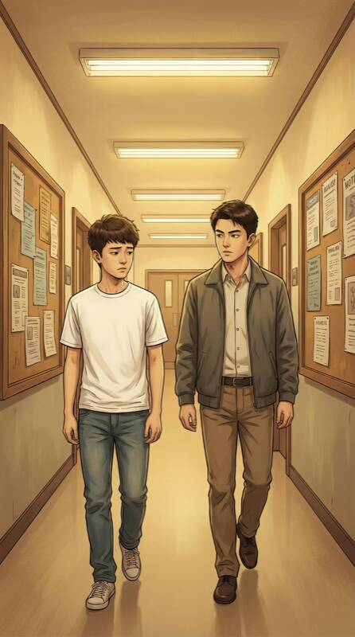
第二天。
我被计算机系辅导员叫去了办公室。
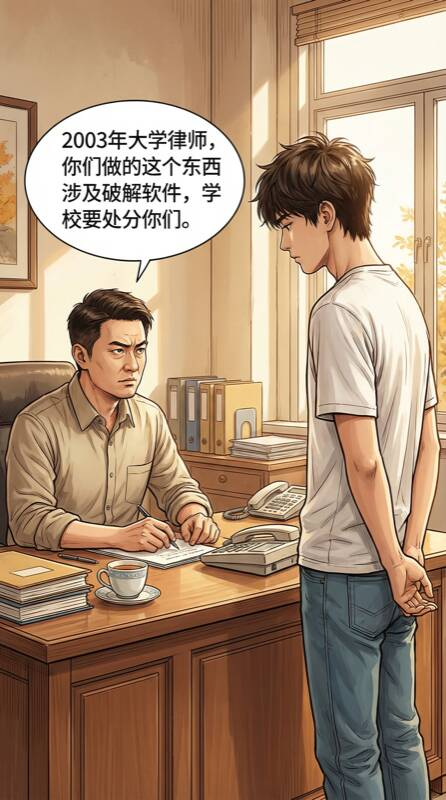
辅导员：「你们做的这个东西涉及破解软件，知不知道？学校正在考虑处分你们。」
他敲着桌子，表情严肃。
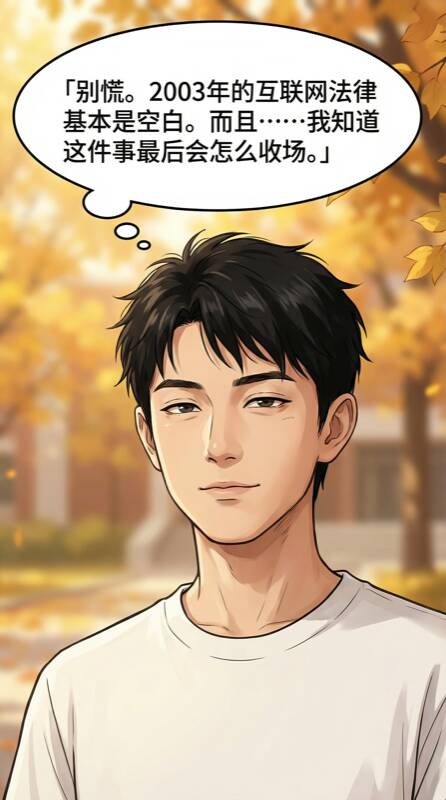
我坐在对面，表情平静得不像一个大三学生。
别慌。2003年的互联网法律基本是空白。而且……
我知道这件事最后会怎么收场。
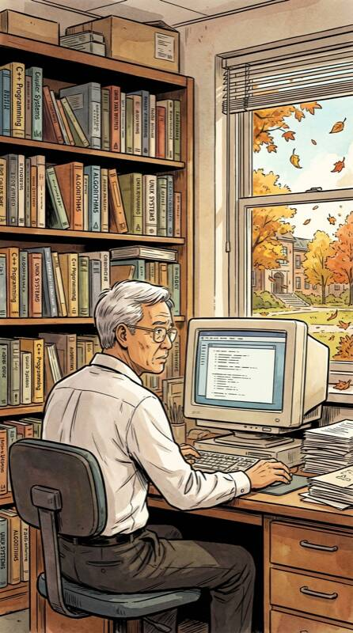
两天后。计算机系，刘教授办公室。
辅导员没有直接处分我们——而是把我的代码交给了系里最严厉的刘教授审查。
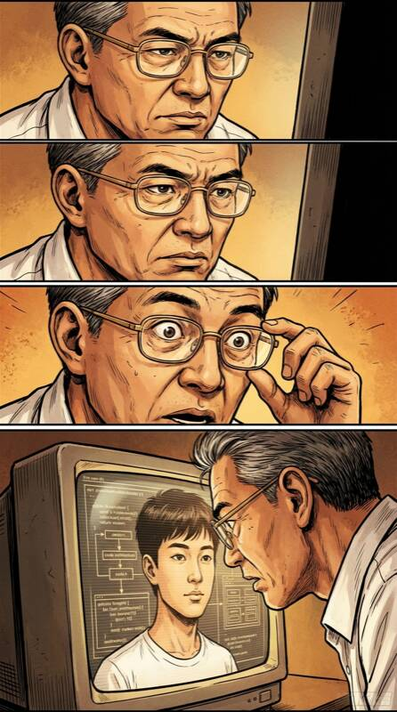
刘教授盯着屏幕上的代码，推了推金丝眼镜。
他的表情从凝重……慢慢变成了震惊。
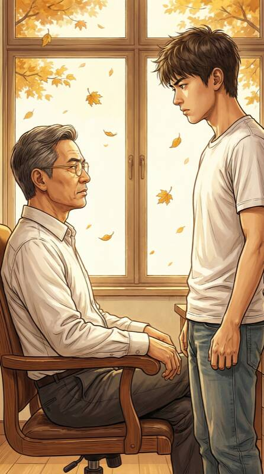
他缓缓转过椅子，看向我。
办公室里安静得只听见墙上老式挂钟的滴答声。
窗外一片秋叶飘落。
刘教授：「这个架构……不像本科生写的。」
他摘下眼镜，眼神锐利得像一把手术刀。
「你到底是谁？」
下一章：「教授的考验」